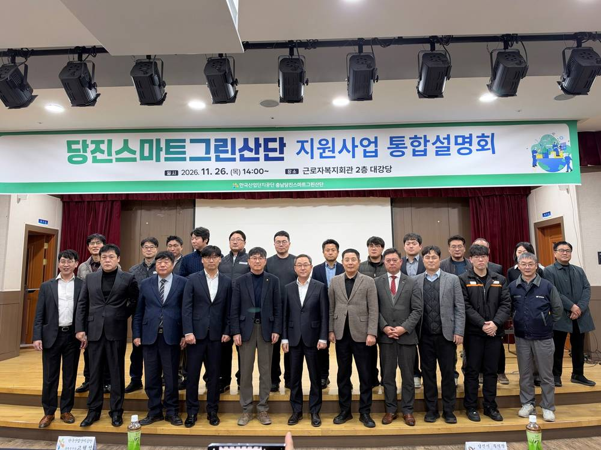

당진 스마트그린산단 620억, 55%는 에너지에

당진시와 한국산업단지공단이 11월 26일 입주기업 설명회를 열었다. 2029년까지 국비 390억 원을 들이며, 12월 초 수요기업 사전점검에 들어간다.
충남 당진 산업단지를 디지털·저탄소 산단으로 바꾸는 620억 원 규모 스마트그린산단 지원사업이 참여 기업 찾기에 나섰다. 당진시는 한국산업단지공단 충남당진스마트그린산단사업단이 11월 26일 당진근로자종합복지관에서 통합설명회를 열었다고 27일 밝혔다. 고대·부곡·석문국가산업단지 경영자협의회장과 입주기업 대표 등 100여 명이 자리했다.
돈은 2026년부터 2029년까지 국비 390억 원, 지방비 100억 원, 민간부담금 130억 원으로 마련한다. 5개 사업 가운데 에너지 자급자족 인프라 구축이 320억 원으로 가장 크다. 스마트 에너지플랫폼 구축 22억 원을 더하면 에너지 분야가 342억 원으로 전체의 55%다. 나머지는 인공지능(AI) 통합관제센터 130억 원, 제조AX 산학혁신파크 82억 원, 스마트 물류플랫폼 66억 원이다.
통합관제센터는 당진시가 맡아 산단의 안전·환경·교통을 실시간으로 관리하고, 산학혁신파크는 그린철강·미래 모빌리티 인력을 기른다. 사업을 맡은 기관들은 이날 지원 혜택과 신청 방법을 설명한 뒤 공장별 제조·물류·에너지 사정에 맞춘 개별 상담을 이어 갔다. 성만제 당진시 부시장은 "스마트그린산단 지원사업이 실질적인 성과로 이어지기 위해서는 기업의 관심과 참여가 무엇보다 중요하다"고 말했다.
당진시는 이와 따로 11월 25일 2027년 재생에너지 융복합 지원사업 공모에 뽑혔다고 밝혔다. 2024년을 뺀 2020년 이후 7번째 선정이다. 2027년까지 쓰는 사업비는 모두 220억 원, 태양광·태양열·지열·연료전지를 놓는 주택·건물은 1,777곳이다. 스마트그린산단 사업단의 다음 일정은 12월 초로, 참여를 밝힌 기업을 찾아가 현장을 확인하는 사전점검이다.
시민에너지 관점
620억 원 가운데 342억 원이 에너지에 쓰이지만, 발표 자료에는 산단에 들어설 발전 설비를 누가 갖고 수익을 어떻게 나누는지가 없다. 당진은 같은 주에 주택·건물 1,777곳 재생에너지 보급 사업에도 뽑혀, 2027년까지는 산단 밖 보급과 산단 안 에너지 자급 설비가 한 도시에서 겹친다. 국비 390억 원이 들어가는 설비의 소유와 수익 배분이 처음 드러날 자리는 12월 초 수요기업 사전점검이다.
출처: 당진시 2026-11-27 보도자료 「당진시ᐧ한국산업단지공단, 620억 원 규모 스마트그린산단 지원사업 본격 추진」(기획예산담당관) 원문 보기
출처: 당진시 2026-11-25 보도자료 「당진시, 2027년 재생에너지 융복합 지원사업 공모 선정」(미래에너지과) 원문 보기